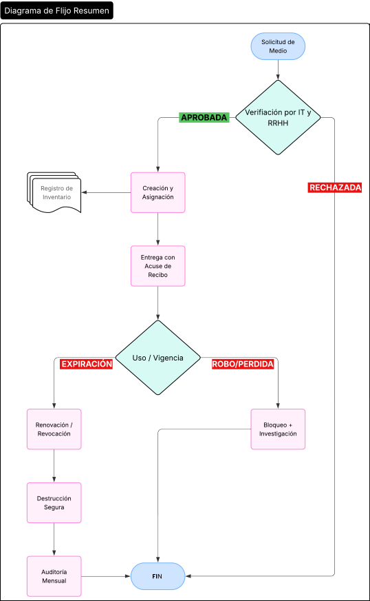

Procedimiento de Gestión de Identidad
1 OBJETIVO
Regular los controles y establecer los procedimientos para la gestión segura del ciclo de vida de los medios de identificación utilizados en los accesos físicos y electrónicos de PRODISMO SRL, con el fin de garantizar la autenticidad, integridad y confidencialidad de los accesos, prevenir el uso no autorizado cumplir con el requisito sobre gestión de identidad, en cumplimiento de normativas de ISO/IEC 27001:2022, así como los requisitos del marco TISAX y clientes automotrices.
2 CREACIÓN Y ASIGNACIÓN DE MEDIOS DE IDENTIFICACIÓN
A. Objetivo
Emitir medios de identificación seguros y rastreables.
B. Pasos:
- Solicitud:
- El departamento de RRHH, el supervisor de área o usuario, envía una
solicitud a IT/Seguridad con:
- Nombre del empleado.
- Tipo de acceso requerido (físico/electrónico).
- Áreas/autorizaciones necesarias.
- El departamento de RRHH, el supervisor de área o usuario, envía una
solicitud a IT/Seguridad con:
- Verificación:
- Departamento de IT valida la necesidad de acceso según el rol (principio de mínimo privilegio).
- Creación:
- Tarjetas físicas: Se registra nombre, apellido, número id de empleado.
- Credenciales electrónicas:
- Contraseñas: Generadas automáticamente (12 caracteres alfanuméricos, mayúsculas, minúsculas y símbolos).
- Registro:
- Se anota en el Inventario de Medios (Excel/CMDB) con:
- ID único, fecha de emisión, usuario asignado.
- Se anota en el Inventario de Medios (Excel/CMDB) con:
- Entrega:
- Firma de Acuse de Recibo de Medios de Identificación.
C. Responsables:
Equipo de IT + RRHH.
D. Evidencia:
Solicitud firmada + registro en inventario.
3 RENOVACIÓN Y REVOCACIÓN
A. Objetivo
Garantizar que los medios no expirados o no autorizados sean desactivados.
B. Pasos:
- Renovación:
- 15 días antes de la expiración (según registro), IT notifica al empleado para renovación.
- Para tarjetas físicas: Se verifica la vigencia del empleado (RRHH).
- Para certificados: Se emite uno nuevo y se revoca el antiguo.
- Revocación:
- En caso de despido/baja:
- IT desactiva credenciales.
- En caso de despido/baja:
- Actualización de Registro:
- Marcar como "Inactivo" en el inventario + motivo (ej.: "Renovación", "Baja laboral").
C. Frecuencia:
Diaria para bajas; mensual para revisiones de expiración.
4 GESTIÓN DE PÉRDIDAS/ROBOS
A. Objetivo
Responder rápidamente para mitigar riesgos.
B. Pasos:
- Reporte:
- El empleado/usuario notifica a IT/Seguridad en menos de 24 horas mediante:
- Formulario de incidente (físico/digital).
- Datos requeridos: Tipo de medio, última ubicación, datos expuestos.
- El empleado/usuario notifica a IT/Seguridad en menos de 24 horas mediante:
- Bloqueo Inmediato:
- Credenciales electrónicas: Cambiar contraseñas, revocar certificados.
C. Documentación:
- Formulario de incidente completado.
- Registro de acciones en el Inventario de Medios.
5 DESTRUCCIÓN SEGURA
A. Objetivo
Evitar reutilización fraudulenta.
B. Pasos:
- Recolección:
- Medios físicos: Depositados en contenedor seguro con llave.
- Destrucción:
- Tarjetas: Cortar en 2 partes con guillotina.
- Certificados:
- Borrado criptográfico.
- Certificados digitales: Revocar en plataforma tulegajo.com
- Registro:
- Anotar en inventario: "Destruido" + fecha + responsable.
C. Frecuencia:
Semanal para medios físicos; inmediata para electrónicos.
6 AUDITORÍA Y TRAZABILIDAD
A. Objetivo:
Cumplir con TISAX y mantener trazabilidad.
B. Pasos:
- Revisiones Periódicas:
- Trimestralmente: Verificar que todos los medios activos están asignados correctamente.
- Anualmente: Auditoría interna cruzando registros de IT y RRHH.
- Reportes:
- Generar informe con:
- Medios no reclamados.
- Discrepancias (ej.: empleados con acceso sin justificación).
- Generar informe con:
Herramientas:
- Software IAM (ej.: Microsoft Identity Manager) para automatizar revisiones.
7 DIAGRAMA DE FLUJO (RESUMEN)

Diagrama de Flujo de Gestión de Identidad
8 PLANTILLAS DE SOPORTE
- Formulario de Solicitud de Acceso:
- Nombre, Departamento, Tipo de Medio, Justificación. F411-IT-1 Formulario de Solicitud/Registro de Medios de Identificación
- Registro de Destrucción:
- ID Medio, Método de Destrucción, Fecha, Testigo.
9 REVISIONES DEL DOCUMENTO
| Rev. N° | Fecha | Descripción |
|---|---|---|
| 0 | 25/8/2025 | Primera Emisión del documento |
| 1 | 21/1/2026 | Revisión completa del documento |